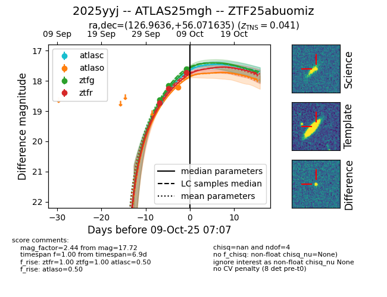
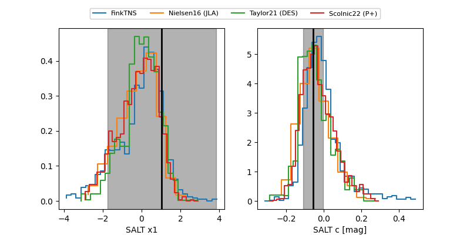

FINK: ZTF25abuomiz
Lasair: ZTF25abuomiz
ALeRCE: ZTF25abuomiz
TNS: 2025yyj
YSE: 2025yyj
ZTF25abuomiz (ztf,fink)
2025yyj (tns,yse)
ATLAS25mgh (atlas)
equatorial (ra, dec) = (126.9636,+56.07164)
galactic (l, b) = (161.6949,+35.53627)


last atlasc=18.71, atlaso=18.21, ztfg=17.61, ztfr=17.72
1 atlasc, 1 atlaso, 3 ztfg, 3 ztfr detections